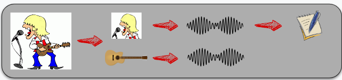

Automatic Sung Speech Recognition from Single Channel Music Recordings
Presentation Outline
- Overview of the project
- Stage 1
- Stage 2
- Plan next 18 months
Overview of the project
The Task
To recognise sung speech from a musical accompanied singing.

Overview of the project
Aims
To automatically recognise the sung speech from a homophonic single-channel audio recording, by adapting robust systems for typical speech and taking advantages of the musical prosody information of both the background accompaniment and the sung speech.
Overview of the project
Breaking down the task
The project was split into three components or stages.
- Unaccompanied singing recognition.
- Audio source separation and singer enhancement.
- Jointly optimise the singer enhancement with the acoustic model

Overview of the project
Research Questions - Stage 1
- Using state-of-the-art ASR systems for spoken speech, is it possible to construct a robust and fair DNN ASR baseline system for an unaccompanied singing scenario?
- Given a baseline system for an unaccompanied singing scenario, can the performance of the system be improved by incorporating musically motivated features?
Overview of the project
Research Questions - Stage 2
- Given that suitable training databases are small by modern ASR standards. How can a singing enhancement DNN approach be trained to obtain a high-quality singing segment suitable for ASR task?
- Can musically motivated features to be used to increase the performance of the DNN singer enhancement model?
- Can the singing enhancement model be extended also to recover the background accompaniment?
- Given the background accompaniment, are there useful musically motivated features that can be exploited for acoustic modelling?
Overview of the project
Research Questions - Stage 3
- Given the source separation and the ASR system, can they be joined in a single system?
- Is there an advantage to jointly optimising the separation and ASR stages, compared to training them as separated systems?
Presentation Outline
- Overview of the project
- Stage 1
- Stage 2
- Plan next 18 months